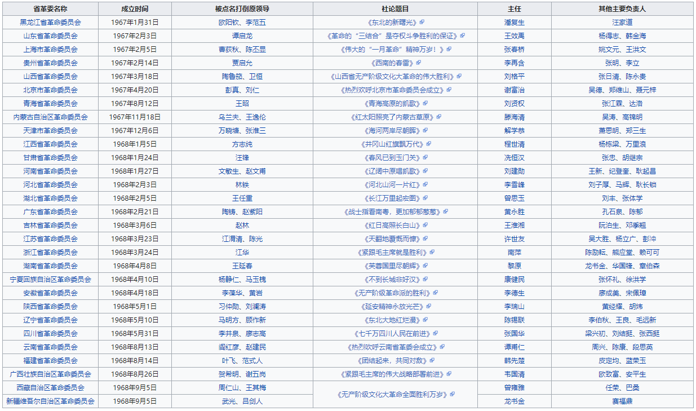
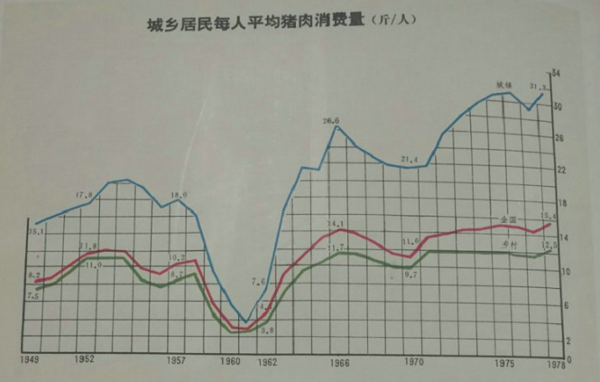

Q：中国社会的主要矛盾就是阶级矛盾
A：交换总比抢劫正义
Q：中国搞市场经济就是抢劫，就是资本家剥削无产阶级
A：现在最有权力的人就是共产党，资本家没有权力，甚至可以说现在没有多少资本家，资本家是合法财产，现在最有钱的人是合法财产么？曹德旺的钱怎么来的，他哥哥省部级干部。你们搞阶级论是给官僚张目，围资救赵。按你们的逻辑，垄断权力的大官不是资产阶级，垄断权力合法。权力垄断的钱是生产经营的钱几百倍，但你们的逻辑下这是无产阶级内部矛盾。你们谈阶级而不直接谈贫富，就是为了给官僚张目。
Q：比尔盖兹凭什么拿那么多钱？还不是剥削了微软劳动者
A：比尔盖茨的钱就是交换体制下竞争来的，正当得来的财产，在正常的体制下，奖励的是有才华，有能力的人，在先锋队体制下，占优势地位的人是与权力最接近的人，市场经济下的分配已经是最优解了。
Q：社会主义下可以按劳动时间分配 生产力发达以后按需分配
A：采取其他方式，对人更不利，甚至对底层而言也是这样，首先，缺乏激励，导致无法创新，社会资源得不到有效配置，比如前三十，手表自行车是奢侈品，再者，按需分配永远不会存在，有的人的需求是昂贵的，比如去月球探险。
Q：中国社会的主要矛盾就是阶级矛盾
A：马克思主义的阶级理论本身就有问题，是用生产资料而非贫富划分人
Q：中国社会的主要矛盾就是阶级矛盾
A：阶级论就是给官僚垄断权力牟利背书的理论，按照阶级论，我只要是无产阶级，我收入再高收入来的再不正当我都正义，举个例子，官僚吃特供是不正义。但按照阶级论官僚是无产阶级，这是无产阶级内部分工，今天谁是权力垄断者？谁最有钱？就是官僚，所以阶级论存在就是给官僚背书的。
官僚特供是一共时期就有的。按照官员等级分上海的房子
改革开放前身份社会的成因和影响
Q：西方代议制民主就是资产阶级专政
A：富人在民主中是处于弱势的，按人头，穷人比富人多的多
Q：那穷人怎么不当总统？赫鲁晓夫一个放羊的可以做苏联总书记 美国能吗？
A：政治也需要技术，选出适合的有技术人代表自己，当然更有利，而且美国多数人能决定总统，苏联多数人能选总书记么？
Q：穷人多 就应该穷人当总统 难道穷人没有有能力的？
A：选总统的目的是什么？是选出为自己服务的人，是看他的政策，而不是看他的出身，而且苏联总书记连选的机会都没有。再说了，学校里学生最多，难道就要让学生当校长？
Q：苏联总书记的确不是选的 但是无产阶级可以做。
A：穆迪家里就是卖茶叶出身的，而且是吠舍，出身不高，说明代议制民主也可以有出身低的人做领导人
Q：西方代议制民主就是资产阶级专政
A：没有资产阶级专政，只有贵族专政。因为资产阶级不是共同体，没有确定的边界。年收入100万是不是资产阶级？1000万是不是？我如果年收入1亿，我也不愿意给年收入1000万的资产阶级提供选举权，我年收入10亿就不想给1亿的分享权力，这充分证明了不是共同体就不可能形成阶级专政，而是阶级内部矛盾比阶级外部大。刘备曹操孙权都是地主阶级，他们最希望彼此死，如果有个农民起义干掉一家另外两家都拍巴掌，但它们会抗议，所以我还是给了选举权。
不存在资产阶级压迫。不同收入阶层可能权利多点少点，强势点。年收入1亿的资产阶级比年收入1000万的资产阶级，之间“压迫”不比年收入90万无产阶级和年收入100万的资产阶级更少，要证明存在阶级压迫而不是不同收入阶层的权力大小差距，得证明年收入1亿的资产阶级对年收入100万资产阶级的压迫远远小于对年收入90万无产阶级的压迫
Q：代议制民主即使有也是资产阶级的民主，只有资产阶级有被选举权，无产阶级只有选举权 没有被选举权，你看现在选举要很多经费在美国甚至可能达到几百亿美元，没有资本家出钱就选不上
A：那么年收入100万元的资产阶级（资产阶级下限）有没有被选举权？那既然它们是资产阶级的一部分，他们没有权力，他们为啥支持资产阶级专政？他们作为资产阶级却是一群实际上被专政的人，阶级统治何在？
如果你说只有出的起被选举经费的才算有完全政治权利，那就不是“资产阶级”专政，而是“出得起选举经费的专政”。而且只要出得起这钱，是啥阶级都是统治者。出不起，啥阶级都不是统治者。
综上所述，阶级统治不存在。
PS：奥巴马和桑德斯的大多数竞选资金来自于25美元下的小额捐款，而不是靠资本家赞助，而且政治广告对投票结果的影响微乎其微
Q：社会主义不需要民主，民主就是反革命，先锋队专政才是革命，先锋队才能维护无产阶级利益
A：先锋队管理一切，怎么保证先锋队为人民利益服务？
Q：先锋队是无产阶级里面最先进的革命者自发组成的，当然可以保证，而且不先进怎么成功夺取政权的？
A：所以哈梅内伊比巴列维先进?而且这么说袁世凯也先进了，因为他也成功过。巴黎公社被镇压了，所以镇压他们的梯也尔才先进。
Q：社会主义不需要民主，民主就是反革命，先锋队专政才是革命，先锋队才能维护无产阶级利益
A：那么你的意思就是先锋队永远代表无产阶级利益不会腐化或者自己成为统治者了？
Q：腐化的先锋队就不是先锋队了，是官僚资产阶级
A：所谓“代表”，是说一个共同体统治的时候拥有一个政府作为执行机器和傀儡。只有民主，才能控制住它，确保它是机器。机器在，才有共同体的统治。机器有了自己意志，骑在主人身上，就不是机器而是统治者了，不搞民主控制不住这个机器
Q：所以毛要发动群众，搞大民主，打击官僚资产阶级
A：你说毛要发动文革，先锋队会腐化；本身就说明你自己很清楚，没有民主是控制不住先锋队的，也就是说，先锋队没啥特殊的，和其他政府一样。
Q：是的，光靠先锋队统治不行，所以毛主席提出了无产阶级专政下不断革命的理论，解决了这个问题
A：没解决，因为前三十还是官本位。造反派在68年后就被打压，各地革命委员会上台，还是没有普选，还是自上而下的官僚统治
七三布告 （毛泽东用军队镇压广西造反派）
文革时期革委会主任一半为军头，剩下的一半大多为政工干部，造反派在68-69年已经大部分被镇压（除了上海造反派被毛泽东下令保护作为样本）

Q：大饥荒是因为刘邓和中下层官僚没有执行好毛主席的路线，三面红旗没有错，毛主席没有错
A：毛游徐水（该报道刊登在人民日报的时间点为1958年8月11日，比刘少奇去徐水听说狗肉汤的时间1958年9月10日-11日还要早一个月）
进入1958年后，直到这年6月，毛泽东对“反冒进”进行了持续不断的严厉批评。他批评的对象，第一个就是《人民日报》1956年6月20日发表的社论《要反对保守主义，也要反对急躁冒进》。毛泽东批评措词严厉，导致《人民日报》总编辑邓拓提出辞职。这使《人民日报》的上下都认为，既然“冒进”是不能反对的，那么鼓吹“大跃进”就顺理成章，而且只有如此才能弥补“反冒进”的错误。
“放卫星”中的《人民日报》
实际上，毛泽东对于人民日报上刊登的头版文章都是亲自过目的，人民日报放卫星是毛泽东默许的结果
Q：官倒和红贵发财说明邓的路线错误
A：前三十更惨，大家一起穷，后三十有了一定市场经济，大家生活好了些
前三十官员二十多级工资制，干部工人农民三者收入差距巨大
收入和地位的不平等：
1951年初，中共中央再度颁布《中央直属各机关一九五一年度暂行供给标准》时，将大灶和小灶的伙食费标准从原来不足一倍的差距扩大到整一倍。（《华北局转发中央直属各机关一九五一年度暂行供给标准》，1951年7月1日，北京市档案馆藏，215/1/1499/1-6。）华北局在此基础上通过津贴费的方式进一步拉大差距，大灶和小灶的最大差距已经扩大到3倍以上。除此之外，华北局还规定了洗澡的不同待遇：
处长以上干部及女同志洗盆塘……一般干部及勤工人员洗池塘。
在四至九月份，男同志及处长以上之男女干部每人每月四次，女同志两次……在一至三、十至十二月份，男同志及处长以上之男女干部每人每月两次，女同志一次。（《华北局行政处关于增加供给标准之具体规定及补领办法的通知》，1951年8月，北京市档案馆藏，215/1/392/6-7。）
1952年3月，政务院发布通知比照等级工资标准，小灶的津贴提高约19倍；中灶的津贴提高4倍；大灶的津贴只提高1倍。工作人员执行哪个津贴标准，按其职务评定。（李唯一：《中国工资制度》，第139-140页。）“各级人民政府供给制工作人员，从中央人民政府主席至勤杂人员，暂分为十等二十四级，每人每月津贴360万元至41000元”。新的供给标准开始根据等级工资制，把不同等级的待遇差别拉大，最高和最低收入分配的差距扩大到21倍以上，直追工资标准28.33倍的水平。
1955年8月，新政府最终取消了供给制，统一实行职务等级工资制。新标准进一步提高了高级干部的工资待遇，将工资等级进一步增加到30个级别，最高一级560元，最低一级仅18元。这样，最高工资加上北京地区物价津贴16%后达到649．6元，最低工资仅为20．88元，两者工资差距扩大到了31．11倍之多。此次工资改革，13级以上干部，除行政1级外，平均增幅达14．35%，而14级以下干部平均增幅仅2．26%。如果从绝对数来看，低级工作人员最少的月收入增加只有0．23元，而高级干部增加最多的达到95．67元，相差几近416倍。
以1946年国民政府颁布的标准，除总统和五院院长等选任官外，文官共分为37个级别，最高一级的收入是最低一级收入的14．5倍。
我们还可以比较一下那个年代西方国家政府工作人员的工资收入情况。在资本主义各国中，除极少数国家外，英、法、德等国的公务员，包括行政长官在内，最高最低工资差，均在8—10倍左右，美国、日本差距较大，也只有20倍。而且，它们差距之大，多半只是总统或首相个人的工资较高，有时会高出下一级行政主管一倍以上。可知资本主义国家政府官员高低之间的收入差距，多半远小于新中国官员的收入差距。
杨奎松：关于建国以来党政干部收入的问答
杨奎松：从供给制到职务等级工资制
——新中国建立前后党政人员收入分配制度的演变
邓时代权贵发财还涉及一个社会主义国家的经济转型问题
因为社会主义制度的原因造就了大量冗余的国有企业，然后在转型中中国又缺乏民主和民间自组织监督和在野党，缺乏在野的政治力量，自然权贵更容易权力寻租
Q：中国社会的996说明了资本家剥削劳动者
A：现在996，是没有市民社会和民主，孙中山立法允许的独立工会，被共产党改为了党领导的工会，是党在剥削劳动者，有了结社权，资本家干不过工会，一人一票，保护劳动者的法律会很多，
A：美国也是资本主义却没有996。并不是美国资本家特别好心，而是因为美国没有不许劳动者结社的一党专政体制。有结社和政治自由，资本家只能抱头鼠窜不敢违反法律。
A：而且是谁允许资本家996的？谁垄断权力，谁就是责任人。
Q：唯物主义史观，人类历史就是阶级斗争的历史
A：反对历史决定论（也就是历史唯物主义）是历史学界共识。因为技术发展是不可预测的，而技术对人类未来影响极大，所以人类未来是不可以预测的，历史唯物主义就是认为人类未来不仅可以预测，而且是共产主义必然胜利的未来
Q：民族矛盾归根到底是阶级矛盾
A：那毛泽东和斯大林肯定是两个阶级（笑），罗马贵族和平民之间有矛盾，结果敌人打来了，罗马平民不参战，最后贵族被迫设置了保民官，保护平民利益，解决了内部矛盾以后平民和贵族一起为罗马作战击败了外敌入侵，其实恰恰是社会内部阶层矛盾调和好了以后，民族矛盾依旧存在，而且民族作为一个共同体更加团结一致对外了。
Q：资本主义会带来人身依附，只有公有制能解决
A：不存在公有制（即全民所有制），而且无论政治，经济，还是文化，非市场经济的指令式制度人身依附程度更高，先锋队控制了全部社会资源，导致普通人离开先锋队无法生存，而在私有制下想搞人身依附只有靠暴力与债务，公民社会下暴力不起决定性作用，债务可以用个人破产法减弱
Q：资本主义会带来剥削，只有公有制能解决
A：首先，客观价值论是被淘汰的，现在经济学主流是边际效用论（为什么马克思主义经济学过时了），其次前三十，先锋队以暴力为依托，通过统购统销手段低价占有农民的劳动成果是比剥削更野蛮的掠夺行为
Q：大多数人民群众是落后的，少数先锋队是先进的，所以必须由少数先进的先锋队领导落后的大多数人民群众，向他们灌输革命理论
A：人民是畜生，而先锋队是神明么？
首先，马克思都错了，列宁主义的先锋队凭什么是对的？
再者，怎么保证没有约束的先锋队为人民服务？
Q：欧美发达国家生活水平高是靠的剥削第三世界国家
A：民族利益至高无上，别的民族的利益凭什么要考虑？
Q： 剥削带来经济危机，解决经济危机必须改变现有的分配方式， 剥削导致持续的供给大于需求，需求不足导致经济危机 ，一般资本主义国家通过对外转嫁国内矛盾的形式逃避经济危机，经济危机必然导致资本主义灭亡
A：全世界那么多次经济危机，资本主义灭亡了吗？而且马克思理论没有考虑到技术创新带来的旧企业被新技术淘汰破产所导致的经济萧条可能性（现在经济学界主流使用经济周期理论而非经济危机理论，例如景气循环理论）。再然后社会主义国家的中共不仅经济危机而且还大量饿死人，而且中共的计划经济体制实际上就是亡于国家财政的极度困难，公务员工资都发不出来了，要大面积拖欠，同时社会福利和社会总需求也是稀烂
Q：当今中国的问题在于中国不是社会主义而是资本主义，共产党是假共产党不是真共产党
A：毛泽东就是真共产党，毛泽东对中国危害更大，毛时代中国问题更多，共产党越真、越狂热、对人民伤害越大，就像波尔布特，试图消灭家庭、货币和市场，造成柬埔寨大量平民死亡
Q：中国年轻人买房难，必须重回社会主义福利分房
A：1978年，中国城镇居民人均住房建筑面积为6.7平米，农村居民的人均住房为8.1平方米，可想而知前三十住房是多么巨大的问题。
80年代的福利分房状况
中国社会调查系统于1988年在北京市进行了1000户居民的入户问卷调查。调查发现住房分配存在以政治身份和行政级别为基础的群体差异：（1）干部与工人的差异。机关干部和企业干部的住房状况明显好于企业工人和商业职工，干部的人均使用面积是8.338平方米，比工人（包括商业职工）高出2.331平方米。（2）党员与群众的差异。党员的人均使用面积为8.33平方米，比群众高出1.88平方米。（3）中央与地方的差异。中央机关干部的人均使用面积为9.23平方米，比市属机关干部高0.87平方米；（4）全民与集体的差异。全民单位职工的人均使用面积为6.75平方米，集体单位为5.65平方米（经济日报，1988年10月11日3版）。
Q：中国吃猪肉难，要回到前三十按票供应
A：
全国居民每人（一年）平均猪肉消费量在1978年仅为15.4斤
Q：计划经济避免了资源浪费
A：大炼钢铁
Q：计划经济避免了过渡污染
A：农业学大寨破坏青海草原。大炼钢铁在全国大量砍伐树木，大片山林被毁。围湖造田，填滇池，填太湖，1936年，西南联大测绘滇池有360平方公里，wg后只剩下298.4平方公里
Q：计划经济避免了两极分化
A：干部工人农民右派四个等级，等级之间天差地别
Q：计划经济避免了劳资矛盾、社会动荡
A：官民矛盾极大，一打三反
Q：计划经济确保可持续发展
A：1992年发现实在不可持续，于是放弃计划经济
Q：计划经济兼顾人民群众现实利益和子孙后代长远利益
A：毛泽东70年代发动计划生育，贻害无穷，毛泽东：“人类在生育上完全无政府主义是不行的”（你他妈怎么不来个计划死亡？），先锋队一路管到了生殖器。而且无产阶级先锋队及其子女夺走了公民的政治权利
毛泽东搞计划生育的罪证：
抓人口问题恐怕也是三年试点，三年推广，四年普遍实行。十年不搞，将来又增加到八亿。来个十年计划，三年宣传试点，再有三年推广，过去六年了，还剩下四年，就普遍推广。看可不可能？少数民族地区不要去推广，人少的地方也不要去推广。就是在人口多的地方，也要进行试点，逐步推广，逐步达到普遍计划生育。计划生育，要公开作教育，无非也是来个大鸣大放、大辩论。我主张中学要上课，要教育怎么样生孩子，怎么样养孩子，怎么样避免生孩子，要生就生，要不生就不要生。人类在生育上头完全是无政府状态，自己不能控制自己。将来要做到完全有计划的生育，没有一个社会力量，不是大家同意，不是大家一起来做，那是不行的。
所谓的大家一起就是先锋队下命令，强制公民接受
在中国共产党第八届中央委员会扩大的第三次全体会议上的讲话（1957年10月9日）
计划生育也有希望做好。这件事也要经过大辩论，要几年试点，几年推广，几年普及。
在最高国务会议第十三次会议上的讲话（1957年10月13日）